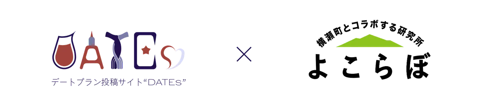
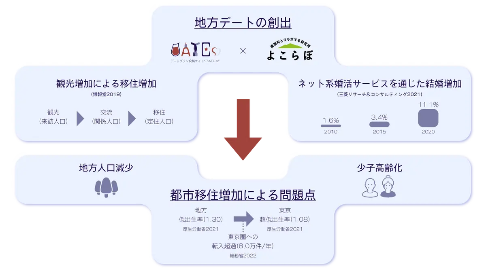

デートプラン投稿サイト「DATEs（https://dates.jp）」を運営するDATEs（代表：藤井洵斗）は、埼玉県秩父郡横瀬町（町長：富田能成）が実施する官民連携プラットフォーム（通称「よこらぼ」）に採択されたことを報告いたします。 今回の連携から、デートによる地方の観光人口増加、また地方移住増加による出生率の上昇に取り組みます。

都市部の出生率が地方に比べ低いこと、また地方から都市部への移住が超過していることが、日本全体の出生率低下の一因と考えられております。この問題を解決する方法として、地方の観光人口増加、観光人口増加による移住人口の増加、移住人口増加による出生率の向上をITという手段を用い、実現することを目指します。

・氷のイルミネーション！？首都圏で自然満喫プラン
https://dates.jp/plans/detail/420
・【埼玉県横瀬町】都心から1時間半！キャンプ好きカップルにピッタリのキャンプデート
https://dates.jp/plans/detail/421
・【3選】最寄りの大自然！埼玉県横瀬町のデートコースプラン！定番&穴場スポットを紹介
https://dates.jp/plans/detail/423
・【3選】最寄りの大自然！埼玉県横瀬町のデートコースプラン！定番&穴場スポットを紹介
https://dates.jp/column/kanto/saitama/845
・【厳選】横瀬のデートプラン
「人々がベストな恋愛をできる世界」を目指して2022年にリリースされたデートプラン投稿サイトです。デートプランを投稿すること、投稿されたデートプランに対し評価やコメントをすることができるサービスとなっております。また、デートプランを探すユーザーは、地域や予算による絞り込み、新着順や評価順などによるソートを行うことができ、自分に適したデートプランを見つけられる設計となっております。
DATEsトップはこちらから→ https://dates.jp
人口約7,800人、埼玉県西部・秩父地方の南東部に位置する横瀬町は、豊かな自然に恵まれ、歴史的な文化遺産も多くあることから、首都近郊の観光地として親しまれている町です。「まとまりやすく、早く動ける」という小さな町ならではの特徴を最大限に活かし、新しい取り組みにも果敢にチャレンジしています。中でも、町内外から募集したプロジェクトのアイデアを実際に横瀬町をフィールドとして社会実装・実験できる仕組みを提供している官民連携プラットフォーム事業「よこらぼ」や、多様性を尊重した「カラフルタウン」の取り組みが注目されています。詳細はhttps://www.town.yokoze.saitama.jp/をご覧ください。
なお、「よこらぼ」については、総務省主催の「令和４年度ふるさとづくり大賞」で優秀賞を受賞。